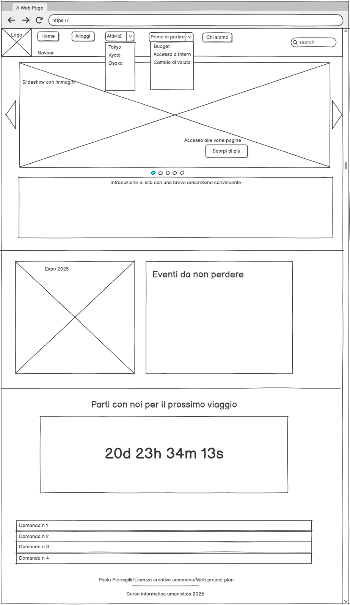
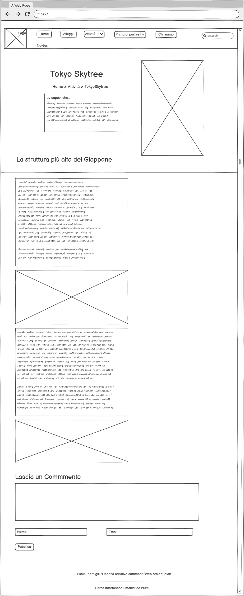
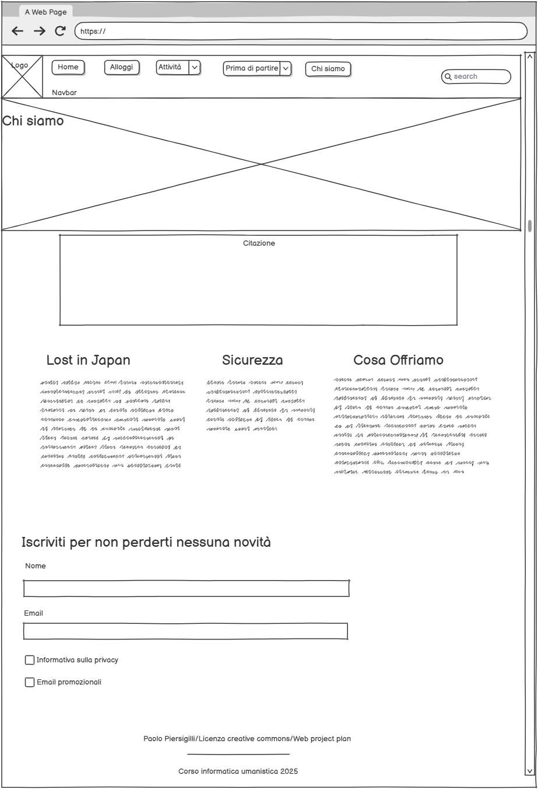

Brief
Finalità
La terra del sol levante è ormai diventata una meta gettonatissima per tutti coloro che amano viaggiare e che vogliono immergersi all’interno di una cultura che ormai sta spopolando nel mondo. Le difficoltà riscontrate però nell’organizzazione del viaggio, come la scelta delle tappe o degli alloggi, sono molte e senza affidarsi ad una agenzia c’è il rischio di fare degli errori madornali. Il mio progetto “Lost in Japan” cerca di trovare proprio una soluzione a questa problema, proponendosi come una raccolta delle principali soluzioni di viaggio per viaggiare in tutta tranquillità con tantissime informazioni a portata di mano in un unico sito, dalla gestione delle spese alla scelta dell’itinerario. In definitiva gli obbiettivi chiave del progetto sono:
Pubblico
L’utenza di riferimento per questo contenuto sarà costituita da:
Accesso
Tenendo a mente il tipo di pubblico a cui questo progetto è rivolto, si è pensato di mantenere un tono accessibile e lineare nelle spiegazioni, favorendo anche una navigazione semplice e intuitiva ma comunque ricca di collegamenti per chi volesse approfondire di più. La struttura delle pagine per la raccolta delle attività saranno essenziali e divise in “card” facilmente consultabili, così che siano accessibili tutte le proposte con grande chiarezza. Queste sezioni inoltre saranno supportate da una mappa che permetterà di individuare la locazione dei luoghi indicati. L’accesso al sito è pensato principalmente da computer.
Contenuti e dati
Le pagine del sito saranno popolate da:
Benchmark
Esistono già diversi siti che trattano di viaggi in Giappone, nella realizzazione del progetto si è tenuto conto in particolare di alcuni siti come:
Struttura
Mappa concettualle
Il tema centrale della risorsa è quello di aiutare ad organizzare un viaggio in Giappone cercando di fornire tutte le informazioni possibili. Ci sono tre aree tematiche: quella delle attività, quella dei consigli “prima di partire” e quelle degli aiuti sulla scelta degli alloggi. La sezione delle attività si articola poi verso tre luoghi di interesse che sono: Tokyo, Kyoto e Osaka. Gli item all’interno di queste pagine saranno smistati in base alla zona di interesse dell’utente, aiutato anche da una mappa dei luoghi.
Schema delle dipendenze
Nello schema delle dipendenze riportato sotto ho descritto la struttura gerarchica delle pagine nel sito. Dalla Homepage è possibile accedere a 3 pagine diverse:
Nella navbar sono presenti 2 menu dropdown che mostrano la navigazione secondaria: uno di questi collega direttamente alla pagine delle “attività” (divise per città in questo caso: Tokyo, Kyoto e Osaka). Ogni item poi sarà commentabile per incentivare l’interazione della community e avrà link esterni rilevanti. Nella Homepage è inoltre presente un countdown al prossimo viaggio, una sezione "domande frequenti" e vari collegamenti a link esterni.
Categorie degli item (metadati)
Sono presenti nell’head di ogni pagina i metadati Dublin Core che descrivono le informazioni chiave della pagina, insieme al link che indica gli schemi utilizzati per gli elementi del Dublin Core (DC). Gli elementi selezionati per le pagine sono:
Layout
Tutte le pagine presentano un header con la barra di navigazione fixed-top in cui sono presenti, a partire da sinistra:
E’ poi presente un footer, da cui è possibile raggiungere la pagina dedicata al web project plan.Tutte le pagine, esclusa la home, sono fornite dei breadcrumbs, così da rendere immediata la navigazione segnalando la dipendenza gerarchica della struttura del sito.
Homepage
Nella homepage, subito sotto la barra di navigazione, si trova uno slideshow automatico che tramite dei pulsanti, una volta cliccati, riportano alle pagine di interesse principale per il fruitore. Immediatamente sotto ci sono due sezioni di testo: la prima presenta una frase accattivante che permetta di attirare l’attenzione del pubblico ma anche dare un’idea generale, la seconda invece è accompagnata da una immagine ed è pensata per essere aggiornata costantemente con eventi nuovi che possano interessare, assieme a collegamenti con link esterni per approfondire. Scorrendo sotto si può trovare un countdown che indica la scadenza per la partenza più vicina, in modo da dare, a chi possa essere interessato, la possibilità di gestire il proprio tempo per l’organizzazione. L’ultima parte della Homepage presenta invece una sezione dedicata alle possibili domande dei viaggiatore che qui trovano una risposta concisa ma comunque esplicativa.
Attività

Questa pagina presenta in alto, subito sotto il titolo, i breadcrumbs che permettono di seguire il percorso logico dalla Homepage fino alla sezione che si sta visualizzando. La pagina presenta poi, per ora, sei “card”, ognuna della quali propone una attività diversa arricchita da un’immagine emblematica del luogo e da una breve descrizione. Anche in questo caso un pulsante “scopri di più” rimanda alla pagina di approfondimento dell’item. Poi è presente la pagination, subito sotto le item cards, che permette di navigare tra i numerosi contenuti. Infine ho voluto anche aggiungere una mappa contrassegnata con i luoghi di interesse sopra descritti, par aiutare il fruitore del mio sito da orientarsi meglio da un punto di vista spaziale.
Item
Nella pagina Item ritroviamo sempre gli elementi fondamentali di Navbar, Footer e Breadcrumbs come descritto sopra. La pagina inizia subito cona una grande immagine affiancata da una piccola sezione di testo che fornisce qualche curiosità in più al lettore. Subito sotto troviamo un paragrafo che descrive nel dettaglio il luogo preso in considerazione, anche in questo caso il testo è supportato da diverse immagini. In questa pagine ho voluto poi aggiungere un elemento di interazione con l’utente cioè la sezione commenti con form per commentare. Fondamentale per connettere gli utenti con la community di interessati online e soprattutto avere un feedback dagli utenti.
Chi Siamo
questa pagina è molto essenziale, appena sotto l’immagine iniziale è presente una breve frase d’impatto seguita da tre colonne ognuna delle quali aiuta a capire al fruitore lo scopo del sito e del progetto, con uno sguardo anche sulla sicurezza. Infine appena sopra il footer si può trovare un modulo di iscrizione per tutti coloro fossero interessati a ricevere direttamente novità o aggiornamenti.
Usabilità
Architettura
Il sito nella sua architettura si vuole presentare pulito e semplice. Ho cercato di mantenere la navigazione intuitiva suddividendo le varie pagine in blocchi tematici facilmente identificabili. Gli strumenti di navigazione primaria e secondaria non cambiano posizione e hanno sempre gli stessi colori. E’ presente un menu a drop down (navigazione secondaria) che rimane visibile sempre, anche scorrendo la pagina verso il basso, grazie ad una navbar fixed-top. L’unico elemento che può avere posizioni varie è la navigazione contestuale che, spesso si trova all’interno degli elementi peculiari della pagina, ma resta sempre manifesta grazie a bottoni visibili o titoli che invitano l’utente ad utilizzare la navigazione. Ad esempio:
Aspetto
Per l’aspetto ho deciso di giocare molto sui colori delle immagini che ho deciso di inserire, proprio per metterle ancora di più il risalto e far percepire al pubblico la bellezza di questo paese. Per quanto riguardo il colore di sfondo ho scelto un colore caldo che trasmettesse pace e tranquillità ma allo stesso tempo sicurezza.
Servizi
Oltre ai sistemi di navigazione primaria, secondaria (attraverso menu dropdown) e search bar, sono presenti: breadcrumbs facilmente riconoscibili che permettono accesso a pagine precedenti; pagination nella pagina di archivio delle attività.
La navigazione contestuale avviene attraverso: slideshow navigabile nella homepage, e card interagibili nella pagina di archivio delle attività.
L’interazione nel sito, invece, è favorita da: Newsletter tramite l’iscrizione nel form con nome e email permette all’utente di essere aggiornato su cambiamenti e/o aggiunte al sito; sezione commenti nella pagina item, mappa dei luoghi di interesse e countdown per il prossimo viaggio.
Bibliografia e Sitografia
- Diapositive e videolezioni sulla piattaforma Virtuale
- Siti web su vari aspetti della programmazione: https://www.w3schools.com/howto/
- ispirazione stile e design: https://happybrain.it/case-history/
- Per l'uso del font scelto: https://fonts.google.com/icons
- Per mappa concettuale e schema delle dipendenze: Lucidchart.com
- Per la mappa interattiva: Leaflet.com
- Per il layout: Bootstrap
- Watabi https://www.watabi.it/?gad_source=1&gclid=Cj0KCQiA4-y8BhC3ARIsAHmjC_FytYlgfgPgGMbbGNN70a94s-Hx6QTQ0ZvtvNAreLGvIQhUfTESGVEaAhQHEALw_wcB
- Japan experience: https://www.japan-experience.com/it/prepara-il-tuo-viaggio/guida-tematica/bilancio-viaggio-giappone
- Viaggi Giovani: https://www.viaggigiovani.it/viaggi/giappone
- Pixels: https://www.istockphoto.com/it?utm_medium=cpc&utm_source=GOOGLE&utm_campaign=IT_Head_Photo_IT_Broad&utm_content=Photo_Stock&utm_term=immagini+stok&program=free-trial&gad_source=1&gclid=Cj0KCQiA4-y8BhC3ARIsAHmjC_EEY9_6r6R48ZdqvFOcy7jV80ENzUDnXc8Wi8k9fMlfU-tL5anY3BYaAgHaEALw_wcB&gclsrc=aw.ds